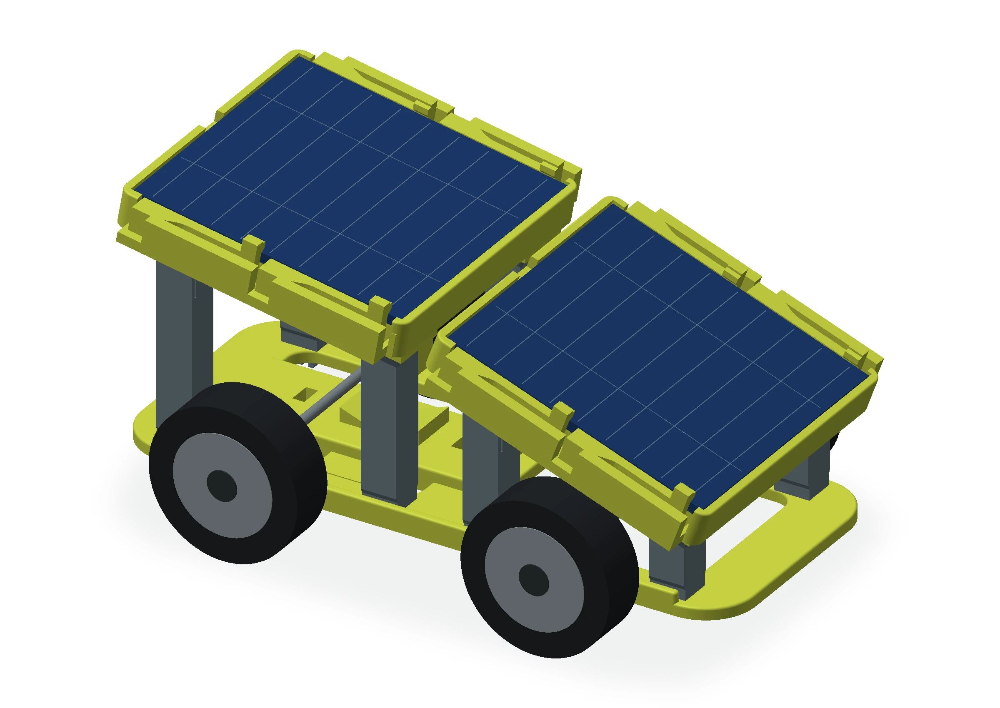

Dos paneles, dos inclinaciones
El panel delantero tiene una inclinación de 20° y el trasero de 10°. El centro del panel trasero está 15 mm más alto.
En acción
El coche real, montado y en funcionamiento.
El reproductor de YouTube solo se carga después de hacer clic. Ver en YouTube
Un proyecto casero / Impresión 3D / Energía solar
Dos paneles solares, un pequeño motor
y piezas impresas en casa.
Diseñamos las piezas, probamos los ajustes, montamos el coche… y se puso en marcha. Ahora tú también puedes construirlo.
Montado y funcionando Noviembre de 2026

Cómo funciona
Los paneles solares alimentan el motor. Los engranajes hacen girar el eje y las ruedas mueven el coche. La estructura impresa mantiene todo en su sitio.

El panel delantero tiene una inclinación de 20° y el trasero de 10°. El centro del panel trasero está 15 mm más alto.
La cuna del motor forma parte del chasis. Una brida sujeta el motor y la distancia entre los ejes de los engranajes se eligió mediante piezas de prueba impresas.
Ocho postes rectos unen el chasis y los marcos. Cada poste tiene fijaciones integradas en ambos extremos, sin tornillos ni cuñas adicionales.
Para dar más firmeza al montaje, puedes aplicar un poco de superpegamento en las uniones de los postes después de comprobar el ajuste. Las uniones pegadas no están pensadas para desmontarse.
Las piezas de partida
El coche que funciona se ha montado con las piezas de dos kits de coches solares de madera SICWUD de Temu. Solo se ha probado este montaje a partir de dos kits.

2 kits para un coche
STEM Kits for Kids Ages 8-10-12-14, Solar Cars
Cada kit incluye un panel; nuestro coche necesita dos. Usa ambos paneles, un motor, cuatro ruedas, dos ejes y un par de engranajes compatibles entre sí. La otra transmisión queda de repuesto.
Elige la variante «Solar car». El chasis de madera se sustituye por el chasis V2.10 y los soportes BF5 impresos.
Ver el kit en Temu ↗El constructor facilitó este enlace al producto que compró. La ficha y las opciones de envío pueden variar según el país.
Del modelo al objeto real
La vista de despiece muestra el chasis V2.10 y los soportes BF5 publicados. Monta primero la transmisión, fija los marcos vacíos y coloca los paneles al final.

El soporte del motor y los apoyos de los ejes forman parte de la base.
Cuatro ruedas sobre dos ejes de Ø2 mm. Coloca el engranaje grande en el eje trasero.
Coloca el motor en su soporte, alinea los engranajes y sujétalo con una brida de 4 mm.
Dos de cada tipo: F1, F2, R1 y R2. F = marco delantero, R = trasero. El tipo 1 va en el borde posterior de cada marco; el tipo 2, en el anterior.
Inserta los postes desde abajo, con las lengüetas superiores hacia la abertura central. Después encaja sus extremos inferiores en el chasis.
Pasa los cables por las aberturas de los marcos. Instala los paneles cuando todos los postes estén fijados.
Las piezas impresas usan la geometría CAD publicada. Los componentes comprados están simplificados; no se muestran los dientes, cables ni la brida. Es un esquema de montaje mecánico, no de conexiones eléctricas.
Un chasis, dos marcos y ocho postes. Elige la orientación y los soportes en tu laminador; los archivos STL no incluyen soportes incorporados.
Instala los ejes, las ruedas y los engranajes. Coloca el motor en su cuna y sujétalo con una brida.
Inserta los postes desde abajo en los marcos vacíos. Encaja las fijaciones al chasis una a una, presionando junto a cada poste. Pasa los cables y coloca los paneles al final.
Comprueba que las ruedas giran libremente y pon el coche en marcha. La parte más gratificante del proyecto.
Construye el tuyo
Todos los modelos actuales en un solo lugar.
Imprime las piezas, adapta el diseño y crea tu propio coche solar.
| Pieza | Archivo | Cantidad |
|---|---|---|
| Chasis con cuna para el motor | solar-car-chassis-v2_10.stl | 1 |
| Marco delantero | solar-car-bf5-F-frame.stl | 1 |
| Marco trasero | solar-car-bf5-R-frame.stl | 1 |
| Postes delanteros F1 / F2 | solar-car-bf5-F1-post.stl / F2-post.stl | 2 de cada tipo |
| Postes traseros R1 / R2 | solar-car-bf5-R1-post.stl / R2-post.stl | 2 de cada tipo |
Los componentes comprados se indican arriba, en «Dónde conseguir los componentes». Este montaje usa dos kits por sus dos paneles, además de un motor, cuatro ruedas, dos ejes, engranajes, cables y una brida.
El archivo también incluye disposiciones de impresión que agrupan los marcos y los postes. Elige estas disposiciones o los archivos individuales para evitar duplicados. Todas las medidas están en milímetros; imprime a escala 100 %.
Chasis V2.10 · Soportes de paneles BF5 · El creador ha confirmado que el coche montado funciona. Los ajustes dependen de tu impresora y de los componentes.